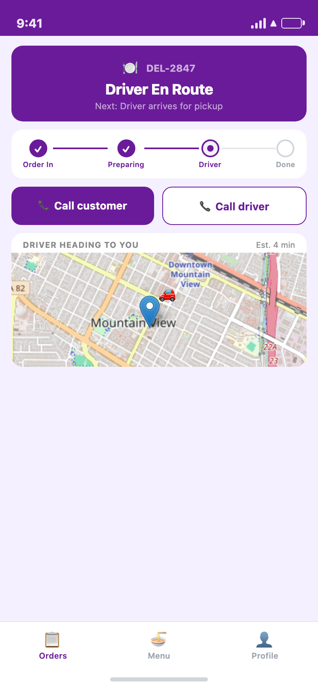

Full Order Lifecycle — Every Step, End to End
🔔 Order In
→
✅ Confirm + Set Prep Time
→
⏱ Prep Countdown
→
✅ Mark Ready
→
🚗 Driver Assigned
→
🔢 Enter Handover Code
→
🛵 Handed Over
→
✔️ Completed
Order Management — Real Screenshots from the Running App
1

Live Order Board
Three sections at a glance: "Needs confirmation" (red alert), "In progress" grouped by state, and "Completed". Every card shows ref, total, and type.
Needs Confirmation
2

Confirm + Set Prep Time
Tapping "Confirm →" opens a modal to set minutes. The "Ready by" time computes live as you type. Sends estimated time to the customer immediately.
Setting Prep Time
3

Prep Countdown + Mark Ready
Step 2 of 4 is active in the progress bar. Live countdown timer ticks down. One tap on "Mark ready ✓" advances to step 3, notifies the driver, and dispatches pickup.
Step 2 — Preparing
4

Driver Arrived — Handover Code Revealed
Header switches to "Driver Arrived" the moment the driver marks themselves as arrived. The handover code appears only at this point — not before. Both call buttons are visible.
Step 3 — Driver Arrived
5

Code Entry Modal
Restaurant enters the 6-character code shown on the driver's phone. Code mismatch blocks handover — no skipping, no workarounds.
Entering Code
6

Menu Management
Toggle items on/off, edit price, category, and per-dish prep time. Every toggle is optimistic — updates instantly on the server in the background.
7

Import from Website
Paste any restaurant website URL. The platform scrapes the page and AI extracts item names, descriptions, and prices — no copy-paste required.
8

Completed Orders
Full order history in the completed section. Every order shows timestamp, total, and delivery type. Cancelled orders logged with reason.
Completed
Driver Tracking & Direct Calls — Once a Driver Is Assigned
9

Live Driver Map — Step 3 Active
Progress bar shows step 3. Live map appears the moment a driver is assigned, refreshing every 30 seconds. Call buttons for customer and driver are both visible above the map.
Step 3 — Driver En Route
10

Live Map from Driver Assignment
The moment a driver is assigned, the map appears showing the driver's position heading to the restaurant. Call customer and call driver both connect via the platform's masked bridge.
Step 3 — Driver Assigned
4Import Methods
LivePrep Countdown
6-charHandover Code
AutoDriver Assignment
1-tapConfirm or Reject
StripeInstant Payouts
What the Restaurant App Does
📋 Order Management
- New orders surface instantly with red alert
- Confirm with custom prep time — ready-by shown to customer
- Live countdown timer on every preparing order
- "Mark Ready" dispatches driver pickup immediately
- Reject with optional reason — customer notified at once
- Pause restaurant for 15 / 30 / 60 min or indefinitely
🔒 Secure Handover & Driver Coordination
- Live map shows driver approaching from the moment assigned
- Call driver directly — masked bridge keeps numbers private
- Call customer to update on prep time or address questions
- 6-character code generated per order for driver handoff
- Driver shows code on their phone at pickup
- Code mismatch blocks handover — audit trail created
🍜 Menu & Onboarding
- Import menu from any restaurant website URL
- Photo of physical menu — AI reads and structures it
- Excel / PDF upload for bulk item entry
- Per-item prep time for accurate order scheduling
- Toggle items available / unavailable on the fly
- Stripe Identity + Connect set up in guided onboarding